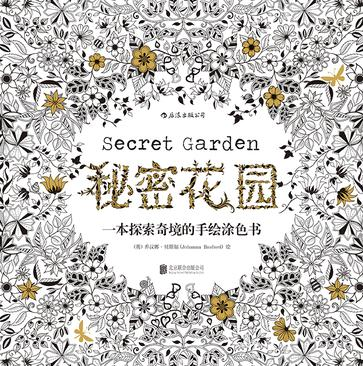
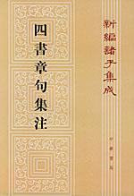
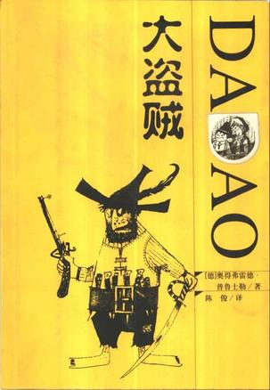
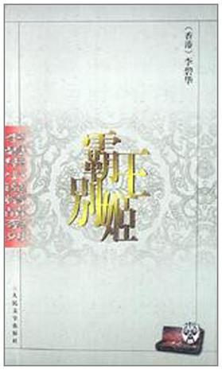
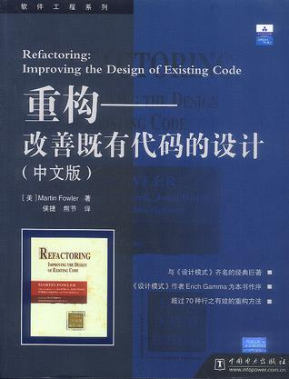
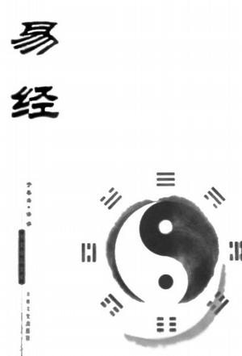
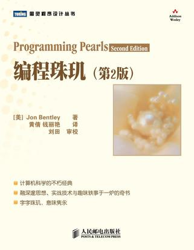
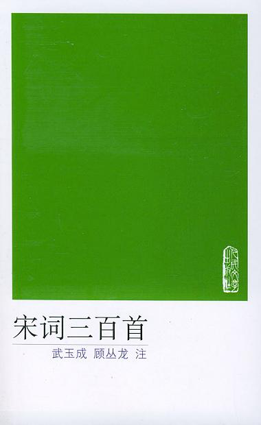

-
Ò与书有关的故事
-
与书有关的故事
- 据说每一个犹太人的小孩子出生后不久，妈妈就会读《圣经》给他听。而每每读了一个段落以后，就叫孩子去舔一下蜂蜜。慢慢地，小孩稍微长大一点了，母亲就会取出那本叫《圣经》的书，滴一点蜂蜜在上面，然后吩咐小孩去舔一舔《圣经》上的蜂蜜。经年日久，书甜如蜜，这几个字眼就会像胎记一样，牢牢地烙印在孩子心里。当犹太孩子长大成人了，依然爱好阅读，阅读成为了一种根深蒂固的习惯，阅读和他们的生活血肉相连，不可分割。由此可见，书甜如蜜，爱上阅读，不仅要让人认识这一点，而且更为重要的是要从小培养阅读的兴趣。
-
又有一个故事，也是说读书的。很久很久以前，有一个人藏书万卷，视若珍宝，但是他只知道吃喝玩乐，将一屋子的书束之高阁，从来也不阅读。他有个朋友，爱书如命，特别爱好阅读，就常常去跟他借书来读，因为太喜欢了，他都不还那个人的书。因为彼此是朋友，藏书者倒也不太在意，再说了，他只是体验藏书的乐趣，不曾体验阅读的甜蜜。
-
一天天，一年年，藏书者的宝贝藏书越来越少了，终于有一天，到了临界点，他发觉自己的藏书一本都没有了，慌了神，怒气冲冲来到朋友家。我的天啦，他看到了什么？他的一屋子宝贝藏书都像长了腿脚一样，跑到了他的朋友家。他怒不可遏地质问朋友为什么借书不还，朋友不恼不怒，微微一笑说：“藏书不读，不如无书。”藏书者是两个哑巴睡一头，无话可说，无言以对，他的朋友又说：“家有藏书万卷，不如阅书一本。切记！切记！切记！”那人羞愧无比，掩面，扭头，脸红耳赤地跑回了家。当他刚刚跨过家门槛，外面响起了驼铃声，来了几个骆驼，他挑开门帘一看，是他的那个朋友，他还书来了，藏书者犹如醍醐灌顶，一下子开悟了，顿时热泪盈眶。从此以后，他勤奋读书，著书，最终成为了一个大有作为的人。
-
说得多么好啊，藏书不读，不如无书，振聋发聩；家藏万卷，不如阅书一本。
-
ð每日佳句
-
我慢慢地、慢慢地了解到，所谓父女母子一场，只不过意味着，你和他的缘分就是今生今世不断地在目送他的背影渐行渐远。你站在小路的这一端，看着他逐渐消失在小路转弯的地方，而且，他用背影默默告诉你：不必追。
——龙应台《目送》
-
只有经历过地狱般的磨砺，才能练就创造天堂的力量；只有流过血的手指，才能弹出世间的绝响。
——泰戈尔《飞鸟集》
-
一个民族有一群仰望星空的人，他们才有希望
——黑格尔
-
我行过许多地方的桥，看过许多次数的云，喝过许多种类的酒，却只爱过一个正当最好年龄的人。
——沈从文《湘行散记》
-
生活在阴沟里，依然有仰望星空的权利。
——王尔德
-
我的生活经验使我深信，没有缺点的人往往优点也很少
——林肯
-
我有个原则：想到要做一件事，就一定要做到，而且要做得彻底。
——狄更斯《远大前程》
-
醉过才知酒浓，爱过才知情重。你不能做我的诗，正如我不能做你的梦。
——胡适《梦与诗》
-
人生的光荣，不在永不失败，而在于能够屡败屡战。
——拿破仑
-
It always seems impossible until its done.
在事情未成功之前，一切总看似不可能。
——曼德拉
-
ö签售♥约见男神&女神
-
宋小君武汉签售，约吗？
- 《玩命爱一个姑娘》第一场
宋小君读者见面会
嘉宾：宋小君
时间：9月12日14:30
地点：卓尔书店3楼3号剧场
- 《玩命爱一个姑娘》第二场
宋小君读者见面会
嘉宾：宋小君
时间：9月12日19：00
地点：403国际艺术中心-漫行书店
- 武汉，我带着《玩命爱一个姑娘》来了。
当我们谈论爱情时，我们在谈论什么。
《玩命爱一个姑娘》语录：
★人生没有什么太老太年轻，我来了，就是最好的时候。
★爱情这玩意儿就像是你的被窝，是冷是暖只有自己知道。
★你是最好的情人，最坏的朋友，最深邃的孤独，最广阔的自由。
★男人应该玩命爱一个姑娘，好姑娘也值得被男人玩命去爱。
★祝普天下所有的前任安宁喜乐，祝他们找到的现任，一个不如一个。
★生命中，有些错过，最后成了错过。而有些错过，因为两个人的勇敢，又变成了相遇。
★谁的生命中没有一份刻骨铭心的遗憾呢？没有遗憾将来靠什么回忆呢？
-
ó本周热门
-
湖北作家刘醒龙《蟠虺》上榜
-
长江商报消息“中国图书世界影响力”前30强，严歌苓夺冠
- 本报讯（记者 卢欢）2014年这一年当中，哪些中文图书受到世界各地图书馆的特别青睐？中文图书在世界上最具竞争力的板块又有何变化？昨日，在第22届北京国际图书博览会上，中国图书进出口（集团）总公司、中国文化“走出去”影响力评估中心等单位联合发布了2015年版《中国图书世界馆藏影响力调查报告》。
- 此次对外公布的“中国图书世界馆藏影响力评估图书TOP30”中显示，入选的图书中绝大多数为文学类作品，仅有两本是非文学类图书。根据全球图书馆收藏数量（以及其中公立图书馆数量）计算，排在榜单前列的依次是严歌苓的《妈阁是座城》、贾平凹的《老生》、刘心武的《飘窗》、杨绛的《洗澡之后》、阿来的《瞻对：终于融化的铁疙瘩, 一个两百年的康巴传奇》、严歌苓的《陆犯焉识》、张小娴的《这辈子我有过你》、徐则臣的《耶路撒冷》等。严歌苓另有《老师好美》进入前十名，无愧为中国作家中的最大赢家。湖北作家刘醒龙的长篇小说新作《蟠虺》位居第13名，作品被全球38家图书馆收藏。
- 中国文化走出去效果评估中心执行主任何明星说，中文图书的世界馆藏影响力目前是中国出版世界影响力研究的一个重要组成部分。相关数据也再次验证他此前所得出的判断：中国当代文学已经成为中国出版进军世界图书市场一个最有竞争力的板块
-
ô猜你喜欢
-
这个60后写的小说 竟然有1/3的年轻读者
- “一个60后作家根据自己前半生经历写成的半自传体小说，发表后却意外发现80、90后也爱读。”15日晚，在作家杨绍斌新书《诞生》的重庆推介会上，他本人说出这个结果时也略显惊讶。
- 今年49岁的杨绍斌是浙江人，曾先后从事过新闻编辑、电视编导、图书策划、房地产开发的他，从1990年起就在《江南》、《收获》等刊物上发表过作品。本次他新推出的半自传体小说《诞生》单行本，去年已经在《收获》杂志上连载过。全书采用了第二人称叙事手法，讲述了主人公李云宾在上世纪八九十年代的青春成长故事：从求学、恋爱、情变，到初涉社会、一度沉沦甚至试图出走，最终在城市扎根。“严格来说，我确实前后写了24年，稿子都改了四次。”
- 在接受记者专访时，杨绍斌表示，自己的这本《诞生》更侧重于个人史角度创作。四易其稿中的最后一次大修改是在2008年之后，“有一半都是在重庆完成的。”杨绍斌说，“都知道，上世纪八十年代是一个打开国门，商品经济的年代，它是一个矛盾体，在某些方面阳光，某些方面消沉。这就导致了书里的有些人是是充满理想主义的，但其实也有一些负面的东西。”在他看来，自己笔下有那个年代特有的一些洋气的东西，喝咖啡，过圣诞，留长发，但同时也有纯真的一面。
- 对书中较为少见地采用的第二人称叙事手法杨绍斌也作了特别说明，“这更多是为了方便加入四十多岁的我对当年的‘我’的一些评论和思考吧。”虽说创作时并未出于迎合市场来考虑下笔，但杨绍斌说，自从去年在《收获》上发表之后，就已经有影视集团找到自己谈过购买版权改编的事了。“因为改编很可能有损耗，所以我更希望书（单行本）上市一段时间，大家看过、对书中人物有一定认识后再来改会更好一点。”
- 此外，杨绍斌还特别提到，让人意外的是，据其了解，《诞生》出版以来，80、90后读者占了近三分之一。
-
õ图书馆的故事
-
出类解密古代世界的图书馆
- 书是活人写给活人看的，但是随着时间的推移，图书馆不可避免地成为死者说给死者听的言语思想的仓库。如果书籍本身毁坏了，那些思想和记忆，连同我们对产生这些言语思想的文化的感觉，便都失落在历史中了。因此我们对有些文明知之甚多，而对另外一些没有文字记录，或者书写材料不能经久的文化，则无法被后人了解。古代文化的故事注定是个讲损失的故事。
本文所讲述的图书馆的故事，从文字书写开始，到罗马帝国灭亡为止。这段时间从大约公元前3,400年开始至公元600年结束，前后大约4,000年，它在形成西方文明机制的过程中是一个至关重要的时期。今天绝大多数类型的图书馆都能从古代世界中找到渊源——百科全书式的图书馆（其目标是收藏全世界所有的书）、学术型图书馆、行政档案馆、私人图书馆还有公共图书馆，所有这些都起源于中东地区。围绕着这些原型图书馆的传奇对后世图书馆从外观到组织都产生了极大影响，笼罩在这些建筑上的神话依旧启发着今天的建筑师。 - 三井寺藏经阁，15世纪，大津，日本
这里收藏有许多佛经，都用亚麻布包裹，再放进铅匣保护，铅匣存放在各自的龛格里。 - 高丽大藏经，1251年，海印寺，韩国
贮藏高丽大藏经的经板殿，这是两座经板殿中较长的一座。经板存放在敞开的书架上以利空气流通，木制书架由石柱础抬离地面，整个经板殿也坐落在石基座上，基座周围环以排水沟。 - 高丽大藏经，1251年，海印寺，韩国
海印寺位于山区高处，冬天气温下降，远低于冰点，夏天山风有助于降低酷热的危害。高丽大藏经就贮藏在前景两座长长的经板殿里，它们处在全寺地势最高的地方。两端两座较小的建筑里存放着次要些的书籍，与经板殿合围成一个庭院。
豆瓣评分
- 
秘密花园
作者: [英] 乔汉娜·贝斯福
出版社: 北京联合出版公司
出版年: 2015-6
- 四書章句集注
作者: 朱熹
出版社: 中華書局
出版年: 1983-10
- 
大盗贼
作者: 奥得弗雷德·普鲁士勒
出版社: 二十一世纪出版社
出版年: 2004-10-01
- 霸王别姬
作者: 李碧华
出版社: 人民文学出版社
出版年: 1999-1
- 重构
作者: Martin Fowler
出版社: 中国电力出版社
出版年: 2003-8-1
- 易经
出版社: 吉林文史出版社
出版年: 2006-8-1
- 编程珠玑
作者: Jon Bentley
出版社: 人民邮电出版社
出版年: 2008-10
- 宋词三百首
作者: 武玉成，顾丛龙 注
出版社: 人民文学出版社
出版年: 2004-08